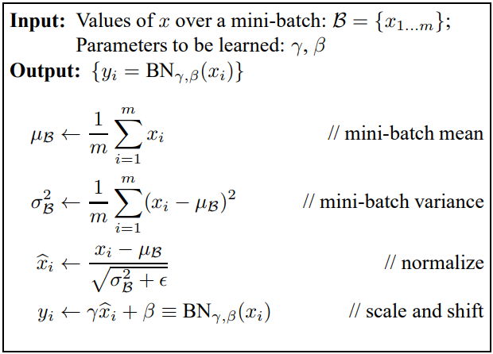
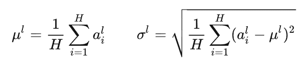
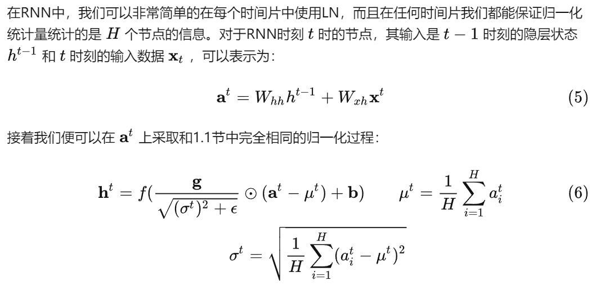
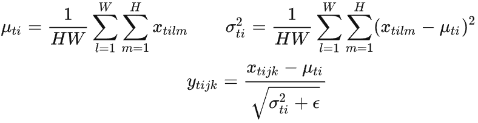

图像生成中的归一化（bn）
图像生成中的各种归一化技术
归一化（Normalization）在深度学习中往往指对激活层的输入进行归一化，从而解决一些训练中的问题。
本文主要介绍以下几种归一化技术：
- BN - Batch Normalization
- LN - Layer Normalization
- IN - Instance Normalization
- CBN - Conditional Batch Normalization
- CIN - Conditional Instance Normalization
- AdaIN - Adaptive Instance Normalization
- SPADE - Spatial Adaptive Normalization
- SEAN - Semantic Region-Adaptive Normalization
BN - Batch Normalization
论文：Batch Normalization: Accelerating Deep Network Training by Reducing Internal Covariate Shift
BN在2015年由Sergey Ioffe和Christian Szegedy提出，主要用于加速网络的训练过程。网络训练的过程中，每层输入的分布会随着上一层参数的变化而变化，因此梯度容易出问题。作者将这种现象定义为Internal Covariate Shift（ICS），为了解决这个问题，作者尝试以mini-batch为单位对每层作归一化，具体操作如下所示，其中为需要学习的参数。bn对每个通道是独立的，一般插在卷积之后，激活层之前。

LN - Layer Normalization
LN是Hinton在2016年提出的，LN主要是为了解决BN的计算必须依赖mini-batch的size大小，这会导致BN无法在RNN中使用，因为不同的time-step对用不同的统计特征。LN与BN最大的差别就是：BN是取不同样本的同一通道特征的做归一化，而LN是取同一样本的不同通道特征做归一化。如下图所示，其统计量只与隐层节点数有关。


在二者都能用的情况下，一般BN更好，不容易损失特征信息。
IN - Instance Normalization
IN最早在2017年由Dmitry Ulyanov等人提出，主要用于风格迁移等任务中。由于此类任务注重每个像素点的信息，而BN等操作考虑了一个批量中所有图片的内容，这会导致每个样本的独特细节丢失，同理对于LN这类需要考虑所有通道内容的算法容易忽略不同通道间的差异。IN是更适合对单个像素有高要求场景的归一化算法（IST，GAN）。在计算统计量时，BN时跨样本，单通道，LN是单样本，跨通道，而IN与二者不同，取单样本，单通道。具体如下所示：

IN同样有可学习的参数，IN在一些场景上不适用，如MLP与RNN中，每个通道只有一个数据（？），或者feature map比较小的时候，此时IN的采样数据非常小，统计量不具有代表性。
CBN - Conditional Batch Normalization
论文：Modulating early visual processing by language
CBN最早由Harm等人在2017年提出，该论文主要介绍了一种Visual Question Answering（VQA）系统，大致来讲，作者为了进一步的将句子语义与图像内容进行对应，提出了将句子的特征与图像的不同层次的特征进行结合。具体做法是：首先获取图像feature map中的BN参数和 ；然后利用句子的LSTM特征作为condition来强调或者抑制feature map中的某些channel；最后则是使用MLP，以LSTM特征为输入，以增量和为输出，来修改最初图像feature map中的γ 和 β。这样就使得在图像的底层和高层feature中融合了句子的信息，并最终取得了比较明显的提升。
BN的公式如下：
其中两参数需要进行反向传播学习得到，而在CBN中，这些参数是通过MLP前向传播预测得到。即和依赖于输入的条件，具体如下所示：
CIN - Conditional Instance Normalization
论文：A Learned Representation For Artistic Style
CIN最早由Dumoulin提出，主要用于图像的风格迁移，相比于普通的IN只能实现单一的style transfer，CIN能够灵活的学习多种风格。IN的计算方式如下所示：
CIN的计算方式如下所示：
二者最大的不同之处在于参数和的学习，IN通过反向传播学习参数，而CIN中的和则依赖于输入的style，一组参数决定了一种风格。
AdaIN - Adaptive Instance Normalization
论文：Arbitrary Style Transfer in Real-Time With Adaptive Instance Normalization
AdaIN最早由Huang等人提出，作者用各种实验发现了网络所提取的特征的统计特性（均值，方差）也就代表了图像的风格，对均值方差做标准化的过程也就是对style进行标准化。因此CIN用不同的和对就能够实现不同风格的迁移。
在BN，IN，CIN中，参数都是网络学习得到的，而AdaIN中不需要网络学习这两个参数，直接使用style image的特征的统计特性代替这两个参数，公式如下：
其中，和分别表示content image的特征和均值和标准差，而和表示style image的特征的均值和标准差。该公式可以理解为，先去风格化，然后在迁移到style image的风格。
SPADE - Spatial Adaptive Normalization
论文：Semantic Image Synthesis With Spatially-Adaptive Normalization
SPADE是由NVIDIA提出的一种空间自适应的归一化方法，主要用于图像合成，旨在解决先前图像合成任务中一些稀疏输入语义合成效果不好的问题。对于传统的normalization方法，例如BN和IN，实验证明它们存在一定的缺陷，即容易将语义信息给抹掉（wash away）。为了解决该问题，该论文提出的了一种空间自适应的归一化方法SPADE，这是一种条件归一化层，它使用输入的语义图以空间自适应方式学到的变换对激活输出进行调制，该方法可以有效的在神经网络中传播语义信息。
SPADE模块的具体结构如图所示：

输入的分割掩码通过卷积层得到可学习的参数，此处的参数与之前不同，不为张量vectors，而是拥有空间维度的张量tensors。和以element-wise的方式multipled和added到归一化后的张量上。具体操作如下所示：
其中，h表示归一化之前的隐层张量，分别表示通道c中的均值和标准差，具体如下所示：
事实上，SPADE是CBN与AdaIN的泛化形式：
- 若用图像类别标签替代分割掩码，则参数具有空间不变性，即CBN。
- 若用一张真实图片替换分割掩码，使参数具有空间不变性，同时设置N=1，则得到AdaIN。
SEAN - Semantic Region-Adaptive Normalization
论文：SEAN: Image Synthesis with Semantic Region-Adaptive Normalization
暂时用不上